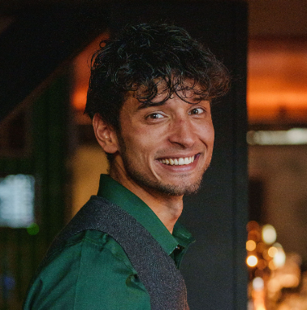

Hi, my name is Kenny. I'm 29 years old and I'm born and raised in the Netherlands. After finishing my bachelor degree in Hopitality management I have been working in the hospitality industry for over 7 years. I have been happy working there untill a couple years back. I felt that I outgrew the industry and that there was not enough left for me to learn.
In 2024 I have been researching my possibilities in IT. It has alwyas been a keen interest of me, but I had never professionally explored my options. Until now. As from April, 2024 I am now one of the Software/Application Engineering Trainees at Educom in Eindhoven. I feel incredibly motivated to grow, and learn al great things this industry has to offer. If you would like to know more, or if you want to contact me, please click the link below.
Kind regards,
Kenny van Teeffelen
